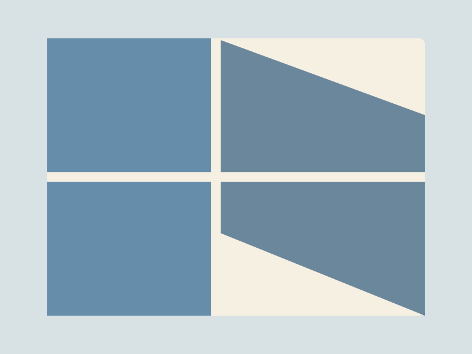

A quiet corner of the web
AnNT
archive

developer · observer · careful maker
A future home for personal photographs.
GitHub Pages
personal archive
A quiet corner of the web
archive

developer · observer · careful maker
A future home for personal photographs.
GitHub Pages
personal archive
Composition adapted from the supplied artwork. View the unchanged reference.